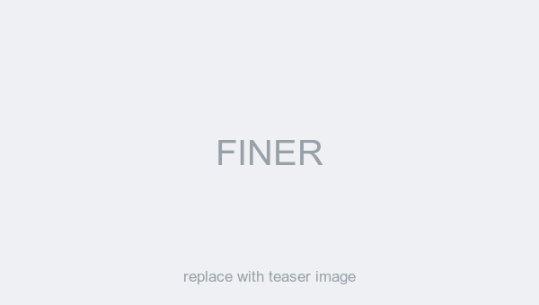
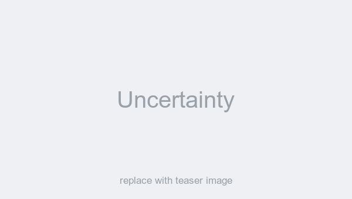
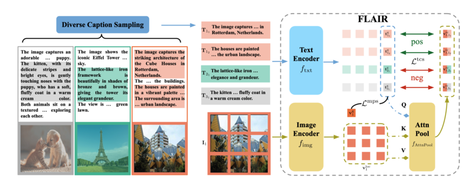
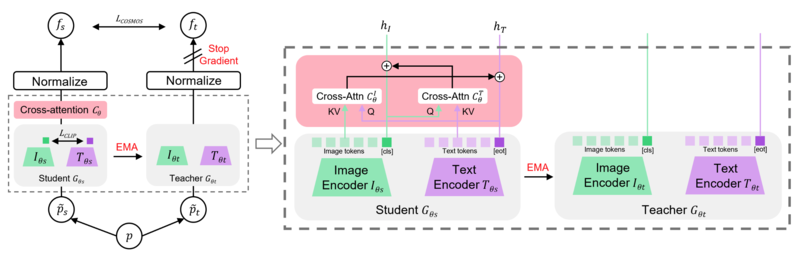
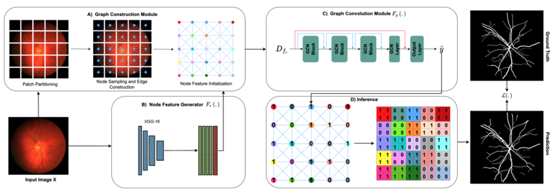

FINER: MLLMs Hallucinate under Fine-grained Negative Queries
CVPR 2026 OralAward Candidate
PhD Researcher, Explainable Machine Learning
Technical University of Munich · Munich Center for Machine Learning
Advised by Prof. Dr. Zeynep Akata and Prof. Dr. Stephan Alaniz
I am a PhD researcher in the Explainable Machine Learning group at the Technical University of Munich, advised by Prof. Dr. Zeynep Akata and Prof. Dr. Stephan Alaniz. My research is on learning across modalities and domains, with a particular focus on the fine-grained visual capabilities of vision-language models — what they actually perceive, where they fail, and how to make them see more faithfully.
Before starting my PhD I received an M.Sc. in Robotics, Cognition and Intelligence from TU Munich, and a B.Eng. in Automotive Engineering from Jilin University, China.
Feel free to reach out if you would like to chat about multimodal learning — or if you are a student at TUM looking for a thesis project in this area.
Bold denotes my name. See also my Google Scholar profile.

CVPR 2026 OralAward Candidate


CVPR 2025

